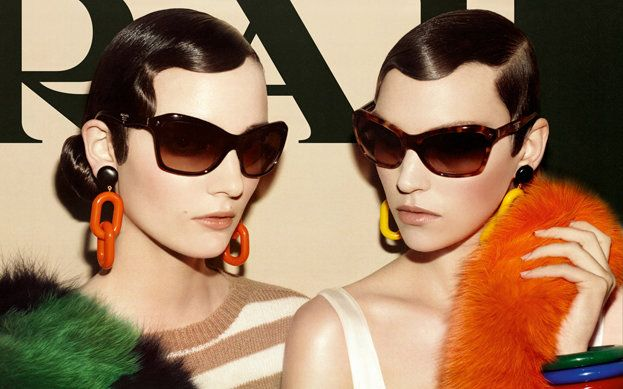
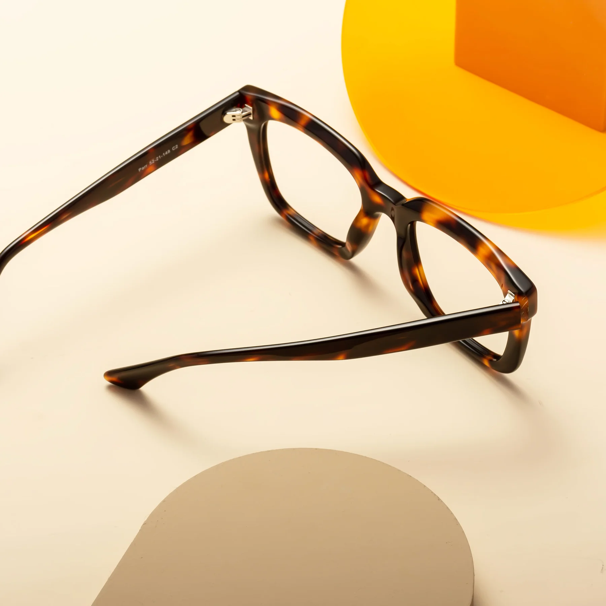

About Face Shape Detector
Face Shape Detector is a virtual try-on tool that allows you to try out different glasses styles before making a decision. With our advanced face detection technology, you can see how different glasses would look on you.
Find Celebrities
Curious to know which celebrities share similar facial features with you? Use our fun feature to find out your celebrity look-alikes and discover your star connections.
Find Your Celebrity Lookalike
Question 1: What is the shape of your face?
Question 2: What is the width of your forehead?
Question 3: What is the shape of your jawline?
Result:
Try Glasses
Discover a wide range of glasses styles and virtually try them on to find the perfect fit. Whether you're looking for sunglasses or prescription glasses, we've got you covered.
Shops
Explore a wide range of eyewear options from our partner shops. Find the perfect pair of glasses that suits your style and face shape.
Discover Shops